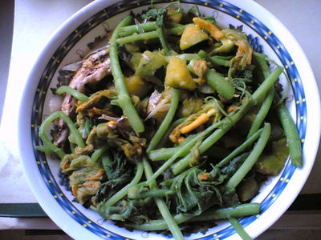
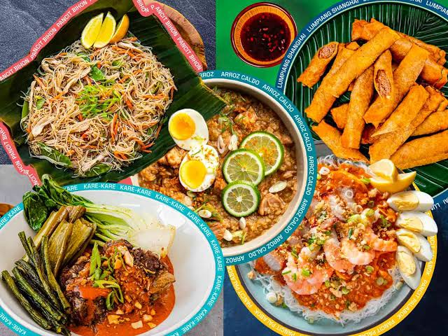
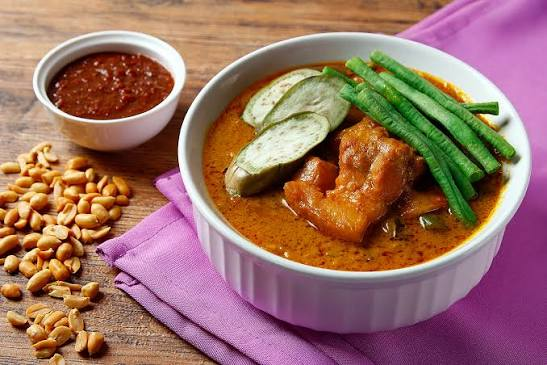

Tahak sa Panlasa
Food · culture · stories
☰
Home
Dishes
Our Story
Feedback
Suggest a dish
Login
⌕
☀️
Light
✳
A little taste of home
Gather around.

Flavor with a story
Made by hand

Always shared

Served with warmth
A regional specialty